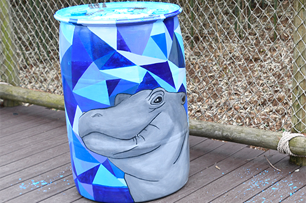
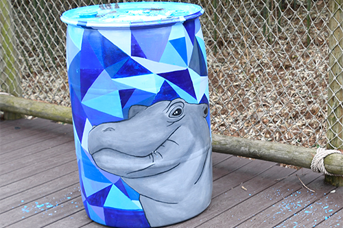

SOUL OF ATHENS PRESENTS
Premature to Prima Donna
The Heartwarming Story of Fiona the Hippo

Fiona, the Nile hippo calf at the Cincinnati Zoo & Botanical Garden has become a social media superstar. She is not the first hippo to be born in captivity, but most definitely the first to rise to such stardom. Born much too early to feed or walk on her own, her survival was unlikely. It was up to the teams at the Zoo and Cincinnati Children’s Hospital to help her overcome the odds.
Fiona’s journey begins in January 2017 with the discovery of 17-year-old Bibi’s pregnancy.
Zoo staff captured the first-ever ultrasound image of a Nile hippo fetus, its spine and ribs clearly visible. Expected not to give birth until March, caretakers thought they had plenty of time to baby-proof the habitat and plan the calf's birth, but Fiona had other plans.
Fiona arrived by surprise just 15 days later on January 24.
Being born six weeks early came with a unique and dangerous set of challenges.
Fiona was severely underweight. Her weight at birth was 29 pounds compared to a full-term hippo which weighs 55-120 pounds.
Just minutes after she was born her temperature began to plummet. A regular full-term hippo should be able to thermoregulate and maintain a temperature of around 96-98 degrees.
Fiona had trouble breathing because her lungs were not fully developed. For the first couple months of her life she was provided an oxygen cannula for support.
Since Fiona was unable to breathe correctly, it was impossible for her to swim in the water. As a result, her skin began to dry out and the zoo was forced to apply moisturizer to her skin so it would not crack or tear.
Fiona’s hooves were extremely underdeveloped as well. A regular full-term hippo should have firm hooves to help them walk on hard ground and swim in the water. This was not the case with Fiona. Her hooves were very soft, gelatinous and white in color.
Fiona was severely underweight. Her weight at birth was 29 pounds compared to a full-term hippo which weighs 55-120 pounds.
Just minutes after she was born her temperature began to plummet. A regular full-term hippo should be able to thermoregulate and maintain a temperature of around 96-98 degrees.
Fiona had trouble breathing because her lungs were not fully developed. For the first couple months of her life she was provided an oxygen cannula for support.
Since Fiona was unable to breathe correctly, it was impossible for her to swim in the water. As a result, her skin began to dry out and the zoo was forced to apply moisturizer to her skin so it would not crack or tear.
Fiona’s hooves were extremely underdeveloped as well. A regular full-term hippo should have firm hooves to help them walk on hard ground and swim in the water. This was not the case with Fiona. Her hooves were very soft, gelatinous and white in color.
So the zoo had to help.
Fiona was so small and vulnerable that she required 24-hour care. Luckily, Bibi was used to standing still for ultrasounds, so caretakers were able to collect milk. Unable to feed on her own, the team tube fed Fiona a mixture of Bibi’s milk and fluid to try to keep her alive.
Because Fiona’s caretakers were the first people to ever milk a hippo, they saved some and sent it to the Smithsonian Milk Repository. “Since we are able to get daily samples of Bibi’s milk, we have a rare opportunity to learn more about specific changes in this species,” said Zoo nutritionist Barbara Henry.
When Fiona had finally learned to feed on her own, she began teething, which was a major blow to her progress. Most hippos don’t even begin teething until several months after they’re born, but she began struggling during feed times, biting and chewing on anything she could. Fiona was slowly eating less and less and within 72 hours she wasn’t eating at all, despite all the pain medication, teething toys, and frequent gum massages. Fiona had become dehydrated and increasingly lethargic and unresponsive. The health of her kidneys also declined and she needed to go back to tube feedings.
-Christina Gorsuch, Curator of Mammals, Cincinnati Zoo & Botanical Garden
Fiona’s veins were too fragile to allow an IV placement for life-saving fluids. Rushing against the clock, the Zoo reached out to the Cincinnati Children’s Vascular Access Team to provide a special IV catheter. Drip by drip, Fiona began to show small signs of recovery, and began bottle feeding again! Because she started getting better, she slowly began to be able to eat normal food.

Once Fiona began to walk and feed on her own, she could move on to learning other skills. Before she could meet Bibi, Fiona needed to learn how to nurse on her own, walk, swim and get a lot bigger, for her own safety.
How would Bibi interact with Fiona during their first direct contact after the birth?
It is known that in the wild hippos are actually super dangerous. Even though they tend to be nicer in captivity… the care staff was still scared that Henry would reject her.
It had been more than 20 years since Henry last interacted with a baby hippo. While Bibi had embraced Fiona easily, Henry was hesitant. He didn’t make any direct attempts to harm her, but it was clear that he was uncomfortable sharing space and didn’t know how to interact with her.
Zoo staff decided to introduce Fiona to Henry in the large outdoor habitat. It would give Henry an opportunity to learn from Bibi and give Fiona room to move away from him if something were to go awry.
The care team supervised, readied themselves to intervene, and opened the doors and let Henry and Fiona make their first direct contact.
By day 3, Henry entered the habitat completed relaxed by Fiona’s presence. Henry began to embrace Fiona’s persistent prodding, even lying in the water and patiently allowing her to poke around. Bibi had even earned trust in Henry’s actions and let her guard down, dozing off several feet away from the other two.
Ever since, the happy little bloat of three began to spend more time together. They quickly developed a routine for their napping, snacking, and playing. When they sleep together, they huddle close and maintain contact just like bloats in the wild do.
“It feels absolutely amazing to be able to say that our sweet little Fiona has finally made it to this place. In spite of the many, many hardships Fiona has had to overcome in her little life, her fighting spirit and incredible will has helped her to prevail time and again. And in a world where there seem to be so many insurmountable problems, Fiona’s story serves as a reminder to us all that humans are capable of some truly amazing things if we work together and dare to believe. As always, we thank you so very much for your continued love and support for Fiona and her care team, and we will keep you posted! #TeamFiona!”
-excerpt from Cincinnati Zoo Blog, by Wendy Rice, Africa Head Keeper, Cincinnati Zoo & Botanical Garden
HAPPY HAPPY HAPPY Fiona was so small and vulnerable that she required 24-hour care. Luckily, Bibi was used to standing still for ultrasounds, so caretakers were able to collect milk. Unable to feed on her own, the team tube fed Fiona a mixture of Bibi’s milk and fluid to try to keep her alive.

Drag the slider to watch Fiona grow!

At birth:
Weight:
Food intake:
Fiona’s dad Henry unfortunately passed away of natural causes in October 2017. Since then, Bibi and Fiona (known by their celebrity name as BiFi, pronounced beefy), recognize that he is gone but are still getting by just fine as a bloat of two. As of April 2019, Fiona is still sassy as ever and it's clear just how much of an impact she has left on her friends, caretakers, community, and the world.


 
